User Research Finder, Copilot and AI tools at NHSE
This monthnote is focussed on AI usage at NHS England, with a deep-dive into the User Research Finder and Copilot projects.
I’ll try to break down how we approached the project and highlight the main challenges that needed to be tackled to get to where we are.
Hopefully this will help departments or teams who are trying to deploy something similar… (it has really not been easy!)
AI Landscape
Things have been changing, really fast. The Gov.uk AI Playbook was published February this year, it is due to be refreshed (again) soon. Our project was featured in the Playbook!
The National Copilot Evaluation Programme started a few months ago, Copilot chat and Microsoft apps with Copilot started rolling out to thousands of NHS colleagues and teams. Then there are the new Copilot Cafes and Ambassador Network - pushing AI as concept, and upskilling teams.
Everyone has suddenly acquired new superpowers, whether writing and proof reading, reviewing data, presenting in song, vibe coding, or whatever they want they can do it. There has been a mix of excitement and horror.
Many departments have also been toying with AI tools for research, design and data processing. Though everyone is questioning everyone else… “can we use these tools or not?”. New guidance has been drawn up based on fears, dividing opinions, pushing AI usage into the shadow realms.
Then there has been the “Copilot Studio” Pilot project. Multiple teams across the business pitched various ideas and tools, including Compliance Checkers, HR chatbots, data workflows tools, document reviewers, email responders. One team pitched a fully-automated research interview analysis tool. We pitched our ideas too: they were well received and we had approval to start building two agents.
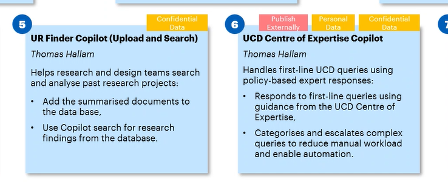
Recently, Google also launched their AI-Mode, while OpenAI launched GPT-5. All these new models (5, 4.1, 4o) and even their ‘mini’ counterparts significantly outperform the previous version GPT-3.5 that we were developing with last year.
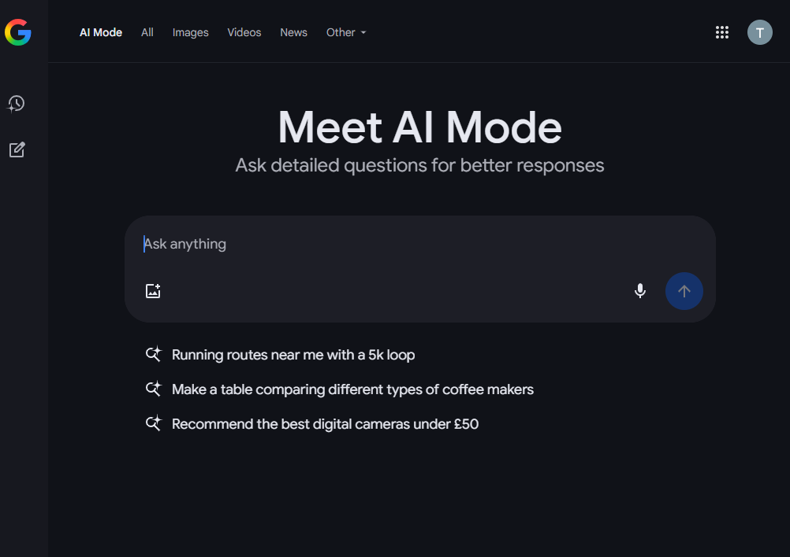
Research Finder: An Unsolvable Problem
Those who have followed my blog posts about UR Finder will know this project has been a persistent challenge. Dating back to 2018 NHS teams started looking into research repositories… after much discovery… a basic spreadsheet was deemed sufficient. Since then, teams have tried everything and more, but nothing sticks: SharePoint, Confluence, Jira, Optimal, Dovetail, etc.
In the last three years alone, we’ve had three more attempts at a cracking the research repository.
“Prototypes” were created by:
- Normally, a specialist agency, built a bespoke website (integrated with OpenAI),
- Microsoft, built a PowerApps service (integrated with AzureAI), and
- NHSE UCD Team, we are now building a prototype with Microsoft Copilot Studio.
Why so many iterations you ask? Well the tech/environment keep changing, usually before we can rollout a thing that works.
In the last two version we aimed for a like-for-like migration:
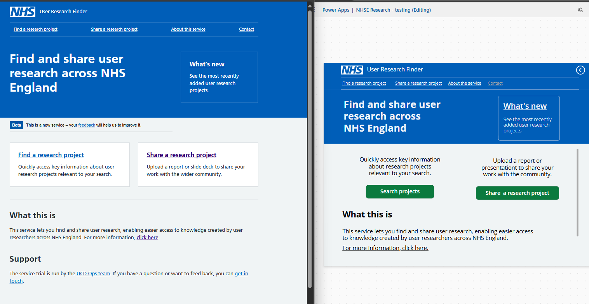
We’ve already had PowerPlatform in the NHS for years, but usage never took off. As you can see, the frontend was very similar (albeit slightly clunky in PowerApps).
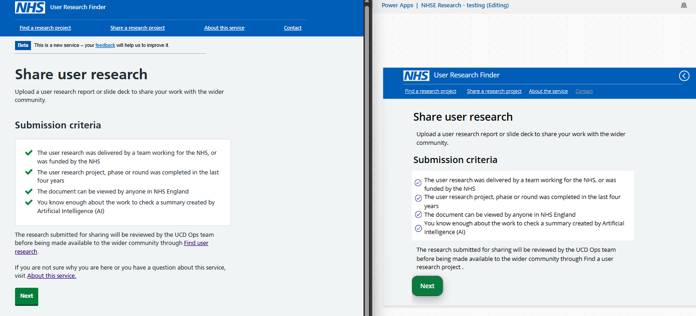
The PowerPlatform learning curve is pretty steep, licenses are often out of reach too. With new possibilities around Copilot and AI Builder using the latest GPT models, teams may well reconsider if it is worth the effort.
For example, teams with a service desk or a shared inbox, might instead use chat agents to understand queries and automate smarter responses, or even to supercharge their workflows and processes.
What problem are we trying to solve?
There is a significant number of Services, Products and teams across the NHS. Many of these teams have researchers, deisgners and product managers who require research insights to inform their Strategy and Roadmaps.
Conducting primary (new) research is often seen as risk, we often hear:
- Research takes too long / We won’t meet “deadlines”
- We’ve done that research before / We already know that
- The cost is too high
Teams may then deprioritise research and try to learn from speaking to other teams in this space. However finding those relevant teams, finding research is time consuming. It often falls to emailing, or Slack posting and hoping someone replies. Teams often just give up and work with increased risks, planning and designing around assumptions.
On many occassions, teams loose key insights and organisation memory when people leave. Some teams try to avoid this by creating a local ‘repository’, but other teams cannot browse the info. These firewalls between teams leads to duplicated research, design and delivery. The risk is shipping services, products and features that we know don’t work.
A good research repository reduces risks and can save the NHS millions every year.
Learning
Before jumping eagerly into the PowerPlatform environment you need to learn about it…
I completed weeks of training and reading: the whole Micorsoft Learn course for Copilot Studio. A year earlier I had also completed the PowerApps in a Day course, Dataverse and PowerBI online courses.
Of all these, the best course was the Fastlane course PL-7008: Create agents in Microsoft Copilot Studio-2115246 which included the Copilot sandpit / guided project. The course was really comprehensive, helpful topic building and managing dataverse. Luckily as part of the Copilot Pilot we joied for free.
Pre-requisits
In our latest attempt to solve this problem is to use Copilot Studio to create a User Research Finder Agent, integrating with SharePoint and Azure AI Builder.
To do this you need to get the right licenses and environment setup (see detailed notes at the end).
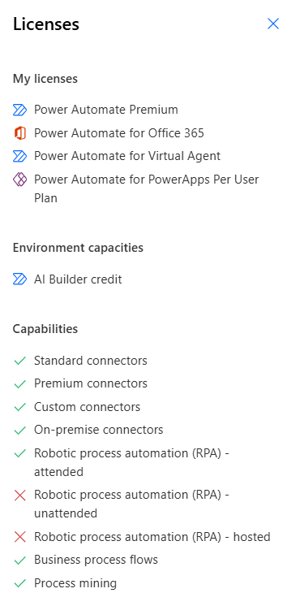
Go Build the Thing
I started by following this YouTube tutorial: Automate File Review in Copilot Studio with Power Automate and SharePoint – Tutorial
The goal was to allow users to upload a file, save it somewhere, return a response from Copilot which has a summary of the file.
As a fairly new PowerPlatform user, the short video took several days to get working. It seemed great and I was quite hopeful this was a good solution. Then endless problems started happening.
Challenge 1 - Data storage
This was a big one. Where to store data? Is it a flat file structure? Or folders e.g. for each team or project?
Microsoft have three options:
- Sharepoint Document Library,
- Sharepoint Lists,
- Dataverse.
There was no guidance or any technical consultant to ask for which datastore would best meet our needs. I needed to learn about and experiment with all three and decide.
Solution: Eventually, after testing all three options, I decided Sharepoint Document Library was the best option (for now). All our research reports are saved in a flat file structure.
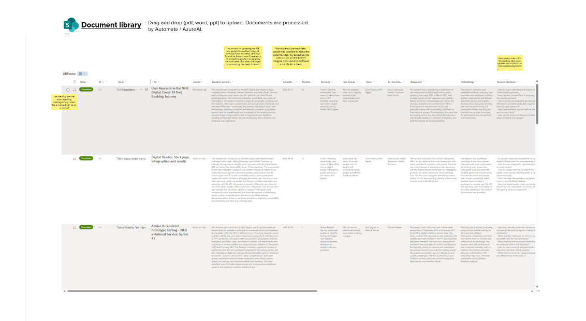
Challenge 2 - Bugs
Only a few days into the build there was a bug, which Microsoft didn’t fix, so it was broken. Apparently a new file processing capabilities would be landing soon, but for our pilot we had to look for more reliable options than Copilot as we had a limited time window to build something.
Side-note the new file management feature is available in Copilot (maybe US-Region?)
- In the agent flow add input parameter as type of File (was not supported before)
- Get the file from Copilot Studio as a record: First(System.Activity.Attachments)
- File content is usable in the Agent Flow
Challenge 3 - Pivoting
We had to review the scope of our MVP, shrinking it down to something very basic. Just upload the file to a Form, or directly on SharePoint… then try to process it with PowerAutomate.
We also scaled back using Copilot Studio: we found there were many blockers (settings and permissions - see technical annex) to getting it to work correctly, so we started using the ‘out of the box’ Sharepoint Agent instead.
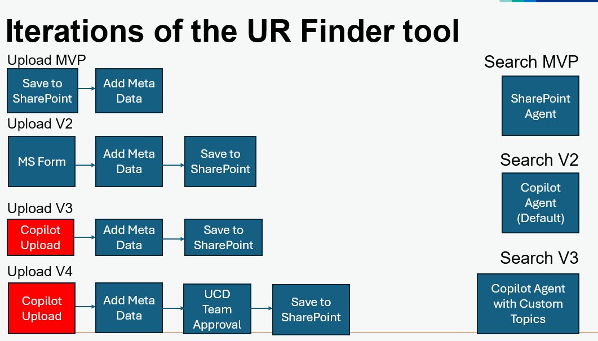
Challenge 4 - It just doesn’t work
Everything I tried on PowerAutomate involved experimenting and failure. It was great getting quick feedback, but disheartening to get Failure after Failure message.
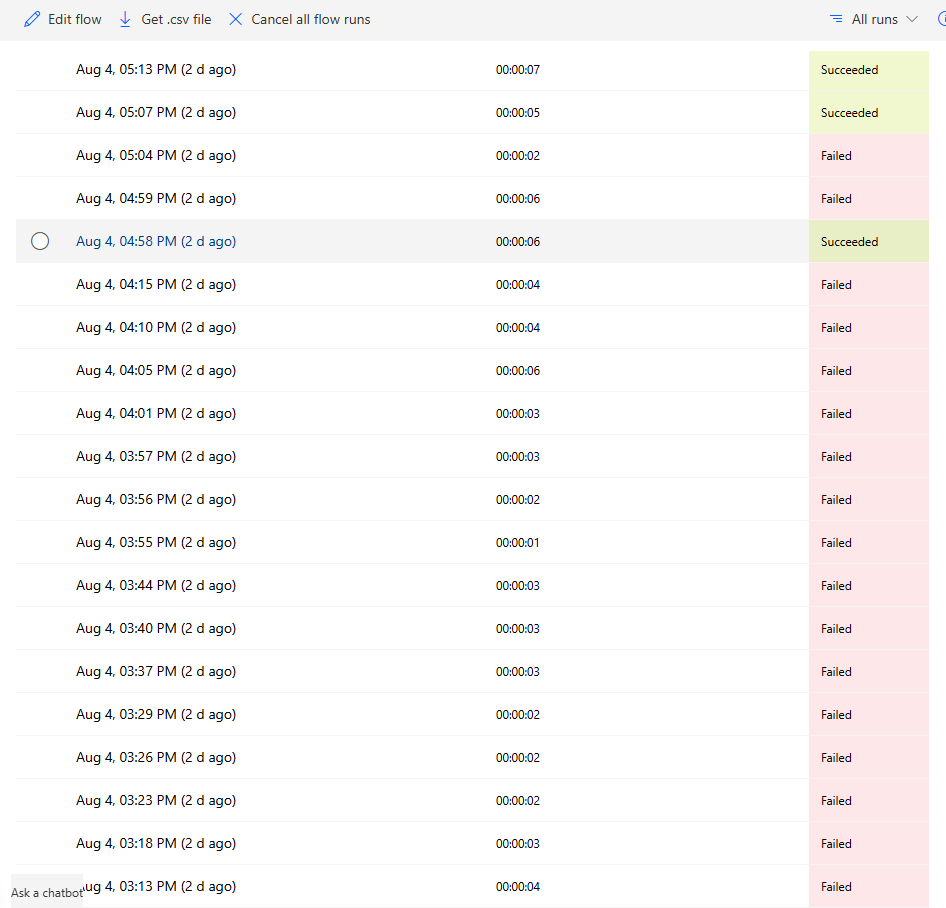
The solution here is to check why each flow failed. Read the error messages as well as search for errors on Copilot. It may take hours but eventually your flow will started running again. Don’t give up!
Once the basic upload process worked, we made lots of small adjustments in Prompt builder, to account for some edge cases and improve output quality.
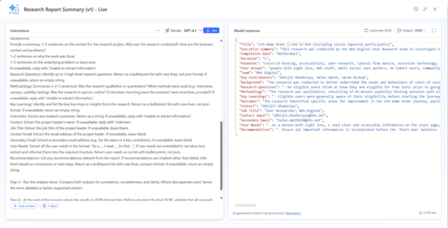
Challenge 5 - Things start to get rather messy
PowerAutomate can do some great things, but it can really move away from being a low-code drag and drop, into being full-code with PowerFX and lots of variables, identifiers, scopes, condtions and settings.
Eventually, after much persistence, I got the workflow to process two file types, Word and PDF docs.
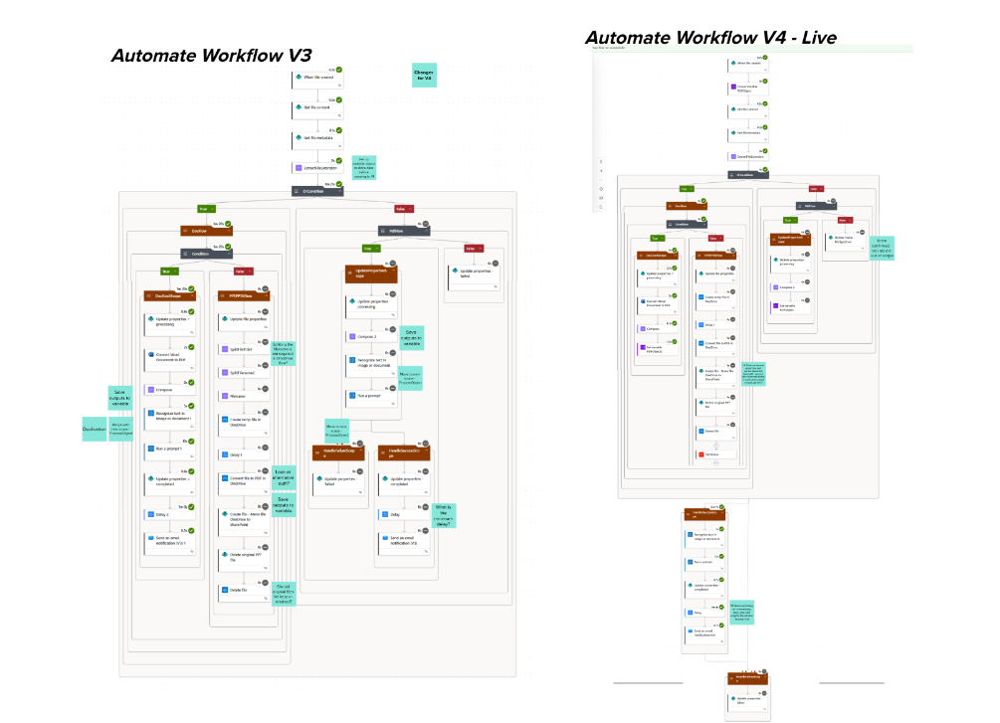
It took patience and exploration to understand what was happening across the whole PowerAutomate solution. To see the bigger picture, I documented our workflow on Mural. This help with adding notes, feedback and identifying opportunities to improve the structures of the workflow.
Challenge 6 - File type not supported
PowerAutomate can’t convert PowerPoint files into PDF, or directly extract the content for the AI Builder:
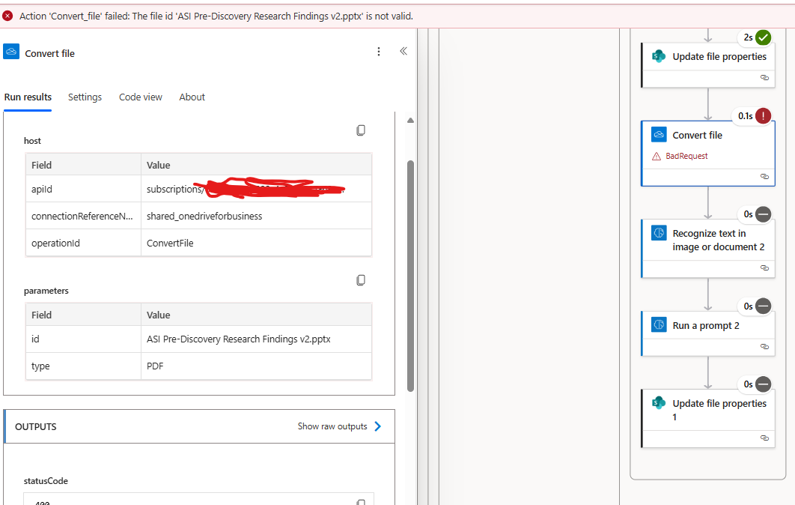
The messy workaround is using your OneDrive for Business workflow to convert the PPT to PDF, then delete the PowerPoint file and restart the workflow. Thanks to Rob on the X-gov Slack #PowerPlatform channel for help with this.
Success, it actually works!
After what seemed like days of trial and error, the solution worked extracting data from PDF, Word and PowerPoint reports.
At this point, I uploaded our data test pack and what I saw was quite amazing.
Hundreds of documents were being processed in batches, simultaneously, the AI summarised 160 research reports in just 5 minutes (quicker than making a decent brew!)
With the upload now working, we started testing all this with colleagues. Many thanks to Laura who organised and facilitated the research sessions, we got some really useful feedback which will help iterate on the solution.
Challenge 7 - Finding insights
Then we moved to testing the quality of Copilot’s responses to typical queries, for example:
“What do you know about NHS appointment booking?” “Find me the last three reports uploaded” “Return a list of documents about the NHS App”
Once we started reviewing Copilot’s responses, often the answers just didn’t make sense.
- It returned data that didn’t exist - hallucinations
- It generated links to documents that didn’t exist
- It provided health advice on queries about conditions
- Sometimes the agent take many minutes to reply, other time it would be instant
- Sometimes it would get confused, ‘crash’, or refuse to answer the question
- On other times, it would answer then suddenly delete the response
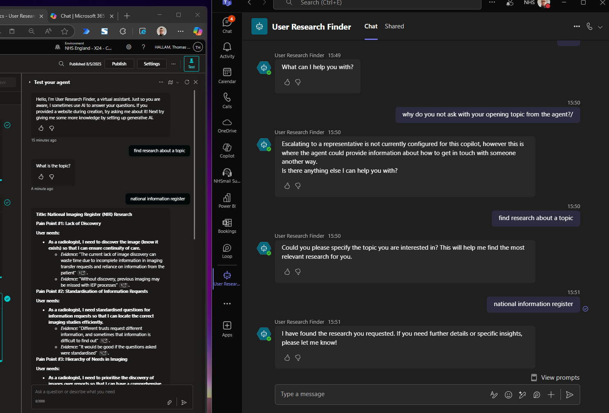
Challenge 8 - Pin down the search results
We tested both the out of the box SharePoint Agent, as well as the Copilot version. Both provided different answers to the same question, which was curious. The Sharepoint Agent worked ok - it could find a relevant document and extract and summarise findings.
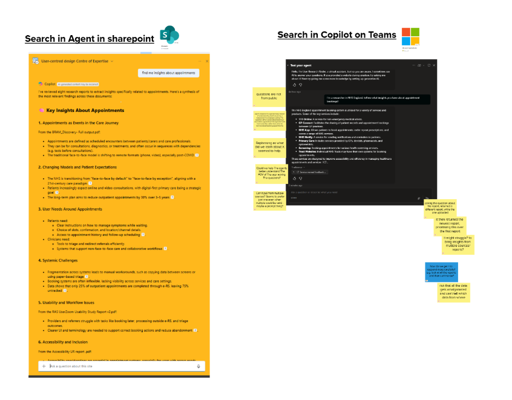
Changes were needed in the Agent Description and Instructions (response rules) to improve how the Copilot generally ‘behaved’.
Also within the Topic interface, I made many changes to data sources and settings (see technical annex), so our generative responses would return only data from the specified Library.
Challenge 9 - Improving the structure of results
Copilot struggled to create targetted research summaries in a helpful format.
I created a custom Topic to retrieve insights such as Pain Points and User Needs in a structured way, with supporting evidence from documents.
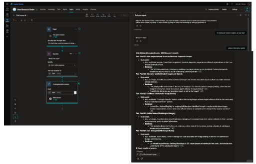
There is another challenge we are looking into is data summarisation across the whole dataset.
Copilot prefers to select the most relevant document and pulls 90% of the findings from that. We need a better way to combine insights in the whole dataset, drawing up and validating themes and insights from multiple documents.
Challenge 10 - Exploring the dataset
As mentioned earlier, Copilot was not good at evaluating the dataset or providing statistical answers - how many reports do you have on this?
To support colleagues to navigate the repository, alongside Copilot I created and shared a PowerBI summary dashboard. We are looking to gather more feedback on whether this is useful feature.
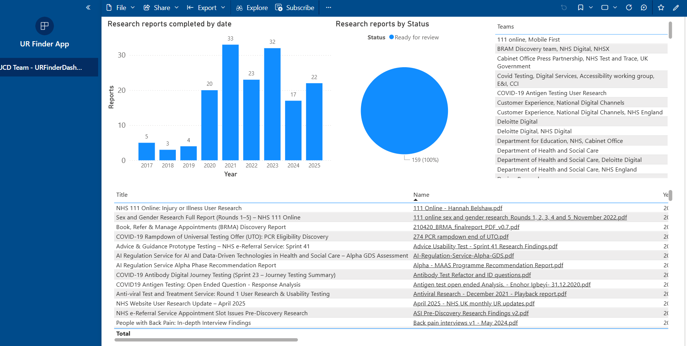
Challenge 11 - What does this cost?
We know the platform license costs, and see a list of AI Builder transactions and Credit usage. It looks to be around 250 credits per report processed on average.
However, it is not clear what the actual costs are?? Or if we need to optimise tokens and credits usage further.
By comparison, the OpenAI API platform provides precise token count (split by model), and precise costs.
If teams are going to use these tools over longer term, we need to much better understand of the costs…
Positive Feedback
In our research, collegaues have been really suprised to see that AI can produce really quick and accurate summaries of their research reports. The solution is quicker to use and more flexible than previous versions. There has been some caution about whether enough safeguards and data checks have been put in place, for example checking documents don’t include personal data.
Senior stakeholders at NHSE have fed back that they ‘chatted to the research Copilot’ finding it really useful, it was especially for new joiners who wanted information about services and past research projects.
We also presented to GDS (DSIT) team, who were really excited and had great feedback and questions. What are the KPIs? For us it is improve findability of research, as well as reduced duplication of projects. Their team are keen to experiment with Copilot Studio too, with a particuar interest in summarising findings into themes (presumably done manually).
Our UR finder link has also been shared with a colleague in policy who needed to access evidence, their feedback was encouraging too: ’This is an amazing resource, I’ve just spent a few mins using the finder and it has come up with some really great docs.”
What next?
There is much more to do around AI usage at NHS England, particularly improving policies, guidance and adoption levels. It feels like some colleagues are on the fence about AI, with many AI sceptics / ethicists (rightly) raising concerns too.
My view is that we don’t have nearly enough data scientists, AI practictioners (or technical experts) inhouse. Personally, I’m trying not to get left behind. Things are changing so fast - learning about all these new tools and how they work is important. Teams risk ending up depedendent on suppliers where no one knows how their AI process works, or how your data is being processed.
Copilot and AI Builder are pretty awesome. Our team we could use these tools to innovate and automating processes might plug a few resource gaps too.
For UR Finder, we need to learn more about whether the search features are working and meeting colleagues needs. Colleagues are optimistic and suspcious… sometimes Copilot has a great answer, other times it hallucinates like crazy.
This has been an interesting a especially challenging project. I’m really very thankful for the regular and kind feedback from colleagues about my work. It has really helped me keep going!
This was my favourite piece of feedback at our last team away day:
“If Tom went missing: Innovation and management of tools for hundreds of colleagues across the digital arm of the NHS would experience and outage. Coordination of guidelines and the Centre of Expertise which is a tool used across the NHS would stagnate.
The User Research profession would lose a key support not only in the form of key knowledge and expertise, but also in projects like the UR Lab, Champions network and UR Finder which has the potential to change the landscape of user research across the organisation benefitting every service area.”
Hope this post is helpful for some team, would love to hear any feedback!!!
Tom
Technical annex
Tips for building products or tools that integrate with AI/LLMs
Be Agile: Reduce your scope, the MVP you can actually build, maybe not the Most Useful Thing for your end users. As your team learn more, and get more buy in, then increase the scope.
Listen: Do regular research. Share early and often with your team and stakeholders. Getting feedback is critical for improving the service.
Data Data: Think like a data scientist and work like a data engineer:
- Plan out the system architecture and data flows
- Build in the information governance processes
- Consider security - what type of data, where is data stored, who has access to it
- Use some version control and create backups
- Test and learn, avoid making too many changes at once.
- Test your prompts with lots of different inputs.
- Create a test pack covering happy paths and edge cases. Check things work every day.
- Expect things to break, have a recovery plan.
Don’t forget, Copilot is also your handy assistant!
- Can you help me plan a new workflow?
- Can you create some test data?
- Can you add this new feature, or review this PowerFX code?
Have fun - while this is a challenging space to work in, when the solution works it is really rewarding to hear positive feedback.
Summary of PowerPlatform environment challenges
- PowerPlatform - kind of works, can be slow and clunky at times
- PowerFX - steep learning curve - not low code, actual code!
- Where to ask for technical support, or advise on best architecture
- Licenses requests for PowerApps/Power Automate, typically take weeks / months
- Environment management is painful - raise a ticket for each issue
- Many features are not enabled by default (so many)
- Features may break without warning
- New features may deprecated without warning
- Inaccessible (non-WCAG compliant) frontends (PowerApps and PowerBI)
- Unclear billing models (what is a Builder Credit?)
Set up the environment (Dependencies)
- SharePoint Site (including full admin access) and a document library (or List) in Sharepoint (for storing data)
- Note, within Sharepoint there is ‘Modern’ and ‘Classic’ experience, depending on the site settings things might look (and function) differently
- PowerApps / PowerAutomate Premium licenses (for building Premium Workflows)
- OneDrive for Business Premium Connector (if processing PowerPoint files)
- Copilot Studio licenses (if creating chat bot)
- PowerPlatform Environment admin/config:
- Must be Dataverse-enabled so that AI Builder works
- AI Builder Credits enabled / Credits Allocated in ‘Capacity’ admin page
- “CopilotStudioEarlyAccessPolicy” should be enabled to allow Copilot to connect to PowerAutomate
- Request admin change the Publishing setting, so Copilot can be deployed into Teams and Sharepoint
- Change Data-Loss Prevention settings:
- (DLP) Allow Copilot can connect to your Sharepoint and/or Dataverse
- (DLP) Sharing of “Copilot Tools” needs to be enabled
Optionally:
- Request the Shared_Sendmail API is enabled, if you want to send email confirmation messages
- Dataverse Premium Connectors (if workflow checks for changes)
- If you use Dataverse for storage and want to create custom pages in a ModelApp, request “Code” tab is enabled with the “Power Apps Component Framework (PCF)”
- PowerBI Premium licenses (if creating dashboards and you want colleagues to be able to view it)
- If your workflow triggers after an MS Form submission: (DLP) ‘Shared_microsoftforms’ and ‘shared_uiflow’ need enabling
- If you are using PowerAutomate Desktop Flows for anything, (DLP) ‘Shared_uiflow’ needs enabling
Copilot Settings / Generative response settings
Some settings needed to be adjusted for our UR Finder Copilot to return appropriate responses:
- Use 4.1 GPT model. The (mini) fast and cheap, but less accurate
- Disable internet Search
- Source: Set document library as source
- Disable Tenant Graph - stops Copilot searching for related (and often random) documents people shared
- Content moderation settings ‘High’ - less hallucination
- Disable Code - saving credits, the agent doesn’t need that feature